Released on April 21, 2010
(Next Release on April 28, 2010)
One Means of Biodiesel Production: The FAME Process
Biodiesel is a renewable fuel derived from animal and vegetable oils, including waste oils, used in diesel engines. The idea of using vegetable-oil-derived fuels to power diesel engines is not new – in fact, it can be traced back to 1897, the year Rudolf Diesel invented the engine that bears his name. Interest has surged in recent years as concerns over the environment and national security have produced policies in the United States and other countries that encourage use of renewable fuels for transportation.
Biodiesel most typically is made by chemically altering the structure of oils found in plants and animal fats through the use of an alcohol and a catalyst. The chemical reaction is known as transesterification and the most commonly used alcohol and catalyst are wood grain alcohol (methanol) and lye (sodium hydroxide), respectively. Soybean oil is the most popular feedstock in the United States, but biodiesel can be created from a variety of other feedstocks, including canola, safflower, sunflower, corn, olive, soybean, peanut, cottonseed, lard, beef tallow, palm, and coconut oils.
Biodiesel is created through several distinct steps after the feedstock has been prepared (Figure 1). Step 1 is to heat the oil to a designated temperature and then mix it with the alcohol and the catalyst. The interaction between the heat, the oil, the catalyst, and the alcohol will create a liquid with two primary layers (Step 2). The top layer will be the biodiesel or fatty acid methyl ester (FAME). The bottom layer will be glycerin, a colorless and odorless non-toxic liquid that can be used for many different purposes, including pharmaceutical and cosmetic products. The reaction uses approximately a 10:1 oil-to-alcohol ratio input and yields 10:1 biodiesel-to-glycerin output. Commercial production processes typically use centrifuges to accelerate the separation process. Once the layers have separated, the glycerin layer is removed (Step 3). Then the biodiesel is mixed with water to allow impurities, including any remaining glycerin, to settle out (Step 4). Any excess methanol is removed through distillation or flash evaporation techniques. The biodiesel is then dried via application of heat to remove any remaining water and filtered (Step 5). The clean biodiesel is then ready to be used in its pure form, B100 (100 percent biodiesel), or in a blended form, such as B5 (5-percent biodiesel and 95-percent petroleum diesel) or B20 (see the September 16, 2009 TWIP for background on biodiesel blends) (Step 6).
Variations to this general approach include use of different alcohols and different ways in which the chemical reaction is implemented. For example, using ethanol instead of methanol as the alcohol would generate a fatty acid ethyl ester (FAEE), which is more costly to produce than FAME, but results in a fuel that performs better in the cold (i.e., has better cold flow properties). Also, the chemical reaction can be implemented in batch mode or continuous mode. Batch mode is suited for home producers or smaller plants (less than 1 million gallons per year) and allows greater flexibility for adjusting the production process to account for variability in feedstock quality. Continuous mode is suited for large plants which can accommodate 24-hour-per-day operations. Continuous methods are designed to increase throughput by reducing production times and increasing production volumes. Even though the FAME process described here has been used for many years, research continues to seek more economic means of producing this fuel, focusing on areas such as speeding up mixing, reaction rates, or product recovery.
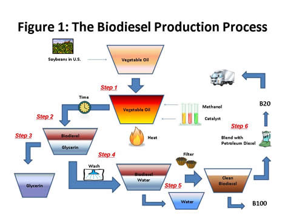
Source: SAIC, 2010
U.S. Average Retail Gasoline Price Remains Steady
At $2.86 per gallon, the U.S. average price for regular gasoline was virtually unchanged from last week and was $0.80 above last year at this time. Price changes on a regional basis were mixed, with the East Coast average falling slightly to $2.82 per gallon. The Midwest average increased more than a penny to $2.85 per gallon. On the Gulf Coast, the price dipped less than a cent to stay at $2.75 per gallon. The largest increase took place in the Rocky Mountains where the price rose two cents to $2.88 per gallon. The West Coast price essentially unchanged at $3.06 per gallon and the average in California dipped almost a cent to $3.09 per gallon.
The U.S. average price for diesel fuel increased half a cent but remained at $3.07 per gallon, $0.85 above last year. The East Coast and Midwest prices moved a fraction of a cent lower to $3.08 per gallon and $3.04 per gallon, respectively. The Gulf Coast price rose a penny to $3.03 per gallon. The largest increase took place in the Rocky Mountains where the average grew nearly three cents to $3.11 per gallon. The West Coast average moved up less than two cents to $3.20 per gallon, while the average in California inched up nearly a penny to $3.23 per gallon.
Propane Stocks Continue Ascent
U.S. inventories of propane continued to build last week, climbing by 1.7 million barrels to 30.8 million barrels in total. The Gulf Coast region experienced the largest gain of 0.9 million barrels. The Midwest region added 0.5 million barrels and the East Coast region added 0.2 million barrels of propane stocks. The Rocky Mountain/West Coast region gained slightly. Propylene non-fuel use inventories increased their share of total propane/propylene stocks from 8.5 percent to 9.0 percent.
Text from the previous editions of “This Week In Petroleum” is accessible through a link at the top right-hand corner of this page.
| Retail Prices (Cents Per Gallon) | |||||||
| 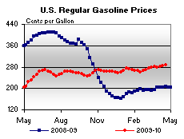 | 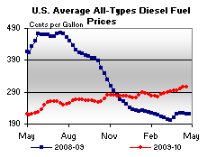 | ||||||
| Retail Data | Changes From | Retail Data | Changes From | ||||
| 04/19/10 | Week | Year | 04/19/10 | Week | Year | ||
| Gasoline | 286.0 | Diesel Fuel | 307.4 | ||||
| Spot Prices (Cents Per Gallon*) | |||||||||||||||||||||||||||||||||||
| 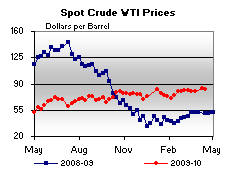 | 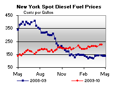 | ||||||||||||||||||||||||||||||||||
| 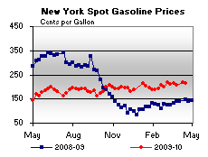 | 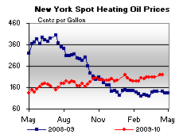 | ||||||||||||||||||||||||||||||||||
|
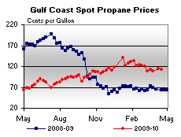 | ||||||||||||||||||||||||||||||||||
| *Note: Crude Oil WTI Price in Dollars per Barrel. | |||||||||||||||||||||||||||||||||||
| Stocks (Million Barrels) | |||||||
| 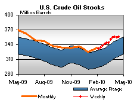 | 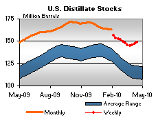 | ||||||
| 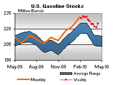 | 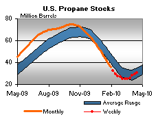 | ||||||
| Stocks Data | Changes From | Stocks Data | Changes From | ||||
| 04/16/10 | Week | Year | 04/16/10 | Week | Year | ||
| Crude Oil | 355.9 | Distillate | 148.9 | ||||
| Gasoline | 224.9 | Propane | 30.798 | ||||